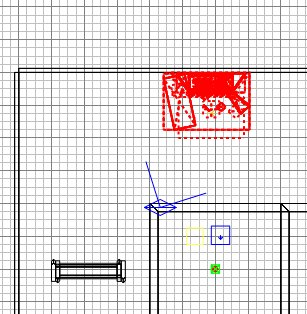

|
Of all the constructibles, destructibles,
health cabinets and whatnot, the one thing you
really don't want to make from scratch is a
Command Post.
Ok you can make a constructible wall by hand
if you like, it's a little long-winded, but
quite easily achievable without resorting to
"here's one I made earlier.".
But a Command Post has a number of fiddly,
angled models and a variety of invisible
brushes, and it really isn't realistic to
make one by hand.
So here are the
prefabs
you need. :)
Unzip them and stick all 6 files into your
prefabs folder. There are 3 pairs of
.map and .script files, being a pair each
for the Allies, Axis and Neutral Command
Posts.
Run Radiant and open your map.
We'll put a Command Post against the north
wall. The command post model is so
complicated you really want to avoid having
to change its angle. So I always find
a suitable wall against which I can stick a
command post without having to turn it
around. You have been warned :)
Suppose we want to put the Axis CP there.
Go to File/Import... and navigate to
prefab_axis_cp and import it. The
model will appear below/left of
(0,0,0). Drag it to the north
wall. It happens to have the correct Z
co-ord value of zero, because I tend to save
prefabs with a Z co-ord of 0, and I try to
keep much of my map floor surface around Z 0
for this reason. It makes building
things easier. (I also try to keep major
height differences to multiples of 128 or
256, because again it makes something
easier: texturing. It cuts down on
having to re-align a texture.)

Press ESC. Compile the map but don't
yet go to ET to test it.
Now edit the prefab_axis_cp.script, and copy
and paste the lot into the bottom of your
tutorial.script file. (As your script
file grows, try to position new procedures
in the right place alphabetically, ie put
"allies" procedures before
"axis", and arrange all subsequent
procedures by alphabetical procedure
name. This makes it easier to find
things later.)
Don't worry about trying to interpret the
contents of the Command Post procedure, it
works just fine and you don't need to know
how the script works (until later in the
tutorial.)
Save and exit from the .script file.
|